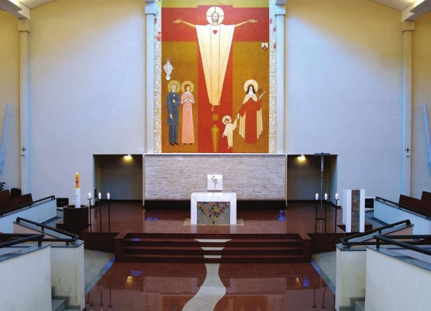

Segunda, terça, quarta e sexta
7h · 12h · 15h · 19h
Conheça a trajetória do Santuário Santa Terezinha, um importante espaço de fé e peregrinação em Taboão da Serra.
A história do Santuário começou com uma pequena capela localizada em uma chácara pertencente aos frades da Ordem dos Carmelitas Descalços. Na época, seminaristas e padres percorriam o caminho desde o bairro de Pinheiros, em São Paulo, para realizar retiros e momentos de descanso no local.
Em 12 de outubro de 1955, a comunidade foi oficialmente elevada à condição de paróquia. Ao longo dos anos, acompanhou o crescimento de Taboão da Serra e se tornou uma referência religiosa para a região.
Com o aumento da devoção a Santa Terezinha do Menino Jesus e a presença de fiéis de diferentes cidades, a igreja recebeu o título de Santuário Diocesano, fortalecendo sua importância para a Diocese de Campo Limpo.
O templo atual possui uma arquitetura ampla e moderna, preparada para receber mais de mil fiéis sentados. Sua estrutura conta com recursos de acessibilidade, como rampas e elevadores.
No interior, os vitrais coloridos permitem a entrada de luz natural e os detalhes de rosas presentes no altar fazem referência à promessa de Santa Terezinha de espalhar uma chuva de rosas sobre a Terra.
O complexo também conta com capela do Santíssimo, salões paroquiais, livraria com artigos religiosos e restaurante comunitário.

O Santuário mantém uma programação de celebrações durante a semana e aos finais de semana, reunindo fiéis em diferentes horários.
7h · 12h · 15h · 19h
7h · 12h · 15h · 18h · 20h
Dia de novenas e bênçãos7h · 9h · 12h · 15h · 19h
7h30 · 10h · 12h · 15h · 17h · 19h
A programação também inclui novenas, celebrações especiais e eventos religiosos tradicionais da comunidade.
Mais do que um espaço de celebração, o Santuário representa um ponto de encontro para pessoas que compartilham a fé, participam da vida comunitária e se envolvem em iniciativas de solidariedade.
Conhecer na Diocese de Campo Limpo ↗